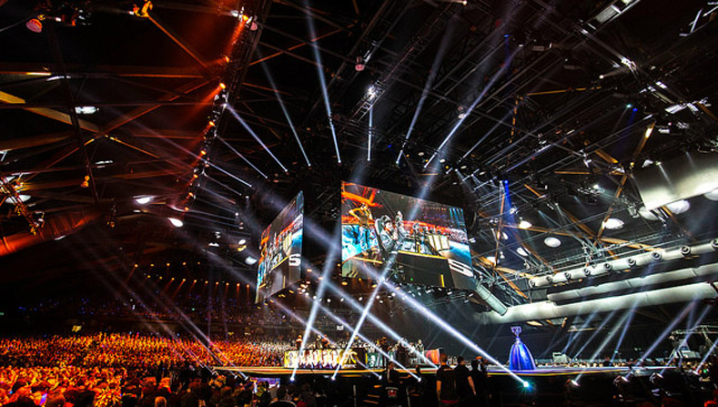
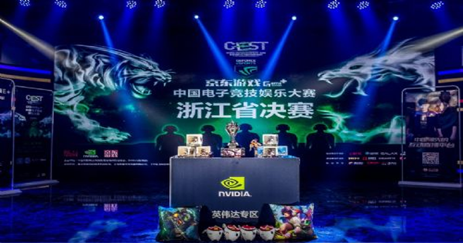

近日，电魂网络携其年度VR大作《净界之涤》，正式登录国内超人气VR游戏平台——英雄VR Omni，堪称广大VR游戏玩家的福音！此外，在今年ChinaJoy上，电魂展厅将设置VR游戏体验区，用户可在现场通过OMNI跑步机体验《净界之涤》，感受这款游戏的魔力。Omni跑步机游戏平台是英雄VR倾力打造的国内领先VR游戏平台，目前已汇聚了数十款优质VR游戏资源，涉及解谜游戏、塔防等多种风格。《净界之涤》这一西方魔幻力作的加入，进一步丰富了平台游戏种类。
作为西方魔幻风格的年度巨制，《净界之涤》一经上线，其深入骨髓的暗黑系风格就受到了广大玩家的热烈追捧，而其史诗的 故事情节与充满了狂野气息却又别具匠心的画面设计则令无数玩家惊呼：“这哪里是游戏！简直是一部好莱坞电影！
《净界之涤》改编自但丁文学作品《神曲》，在继承了传统暗黑系冒险游戏精髓的基础上，巧妙地将西方宗教文学与VR游戏世界观相结合，构建了一个黑白交错，光暗失衡，血肉交织的悲壮舞台。而其庞大精细的剧情架构更是堪比暗黑系游戏经典游戏中，玩家所扮演的主人公带着前世的恩怨纠葛从炼狱中醒来，冥冥中似乎有一个声音在召唤着他重归现世在神秘的呼唤下，玩家需要和迷一般的英灵维吉尔一起，并肩作战，穿越重重炼狱寻找回到现世的方法。但是炼狱又岂会是那么容易穿越的？游戏中炼狱共分九层，每一层都有着极为恐怖的领主在守卫着他们的领地。未知的生物、恶魔堕落的圣者、星杯骑士团......玩家必须充分发挥自身的勇略，将强大的敌人一一击败，从最黑暗的炼狱深处杀出重围。而随着游戏的深入，玩家前世的宿命也会因为这场史诗般的冒险而逐渐浮出水面......
无论是特色十足的剧情，还是极具视觉冲击力的游戏画面，《净界之涤》由电魂旗下勺子网络独立开发制作，团队核心成员皆有多年3A主机游戏开发经验。以冷峻杀戮为基调，以热血激燃为骨肉，粗犷的画风将西方的暴力美学近乎完美地融入到了游戏意境之中，结合VR特性，处处彰显了炼狱深渊的粗粝和灵魂深处的迷茫，让玩家得以切身感受到来自地狱的绝望与残酷。玩法方面豹猫将更多的角斗元素加入到了《净界之涤》，玩家将会在陌生的环境中与狂暴嗜血的BOSS进行零距离生死搏杀，核心向第一人称动作游戏体验在本作体现得淋漓尽致。游戏特意准备了丰富的武器系统和多样化的格斗模式，用以满足玩家多样化的游戏需求。
强大的古罗马式巨盾保障玩家免受伤害，深渊陨铁打造的锋利的单手剑让你体验到刀刀入肉的快感，极富打击感的狼牙棒则能 让你感受到钢铁撕裂血肉时沐浴在血液喷飞中的极致疯狂。
独特的武器成长体系允许玩家利用击中BOSS所掉落的洪魂对武器进行强化，帮助玩家对抗越来越强大的BOSS。